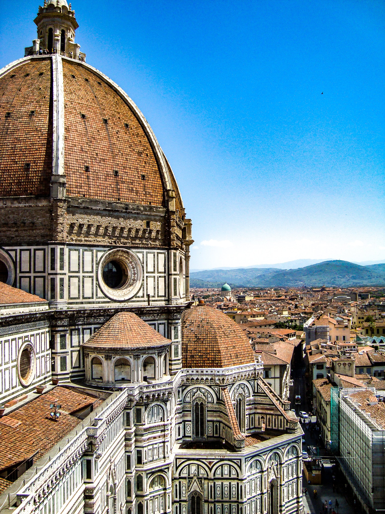
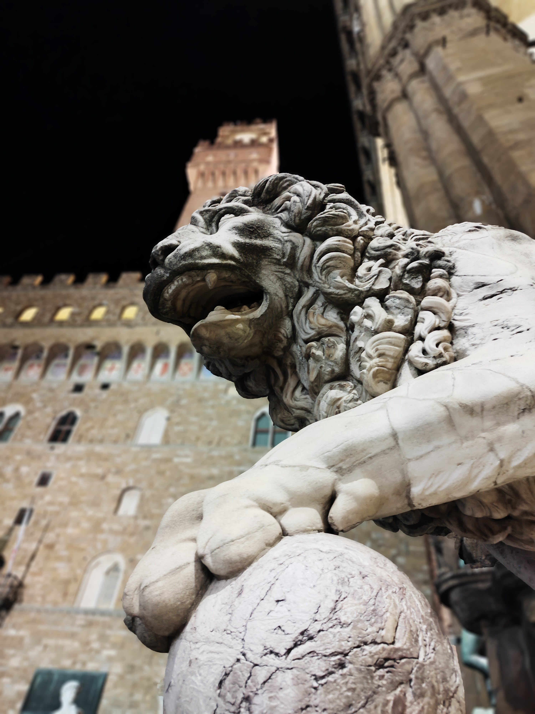
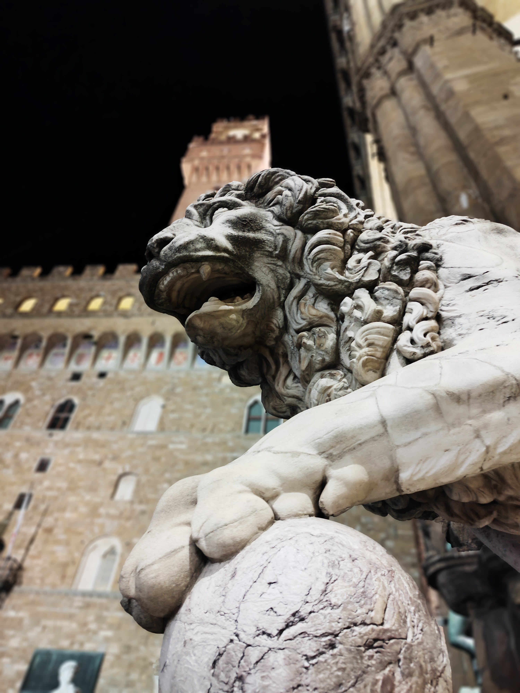
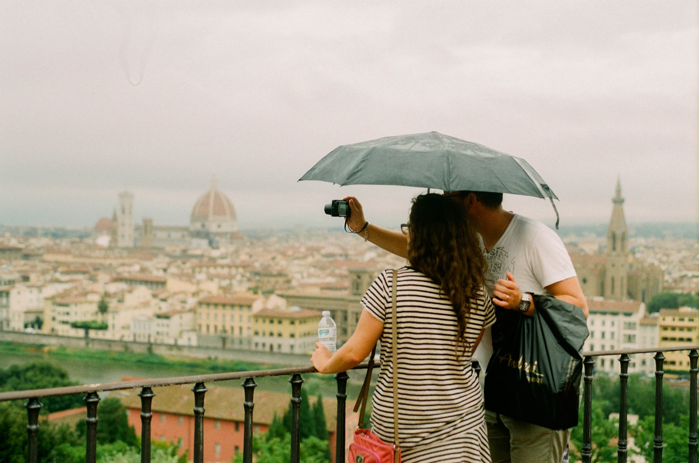

Florence, Italy
Florence is home to some of the most famous museums in the world as well as its spectacular cuisine. It is the perfect destination for a holiday getaway dedicated to experience new cultural experiences . Its vibrant soul fills the streets, with architecture, churches, and museums.

 

Travel Assistance
Book your next trip with us!
We are so happy to assist you in booking a trip of a lifetime! When planning a trip we know how stressful it is to find the perfect place to stay and how many countless hours it takes to plan a trip. That is why we are here and have already done all the work for you. All you have to do is sign up with us. We will help assist in you in booking a hotel, flights, and transportation. We even give great recomendations of leisure activities such as art museum, touring vineyards, and cooking classes. Our compnay has a team of individuals who do all the heavy lifting behind the scenes to help plan the perfect trip abroad. 